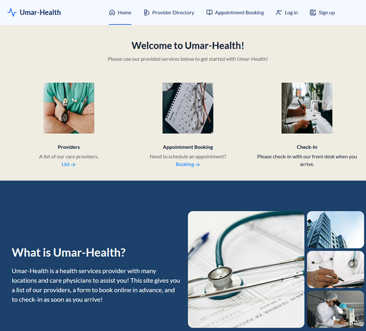
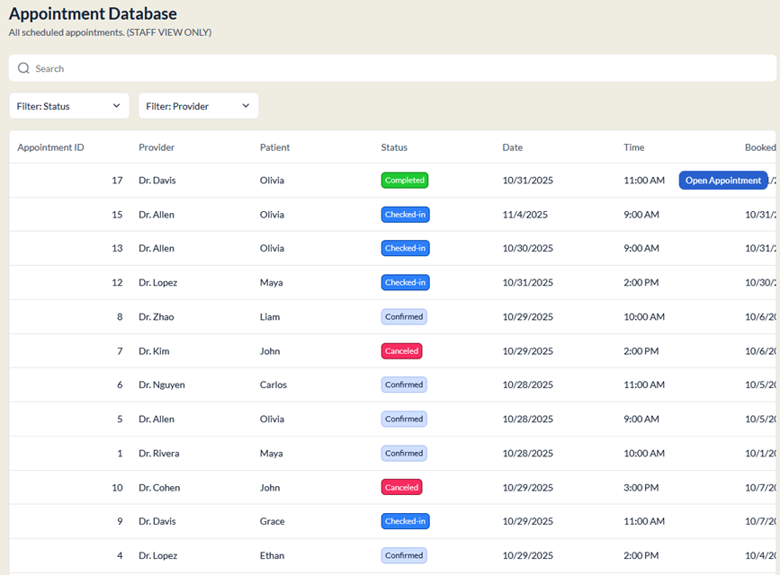
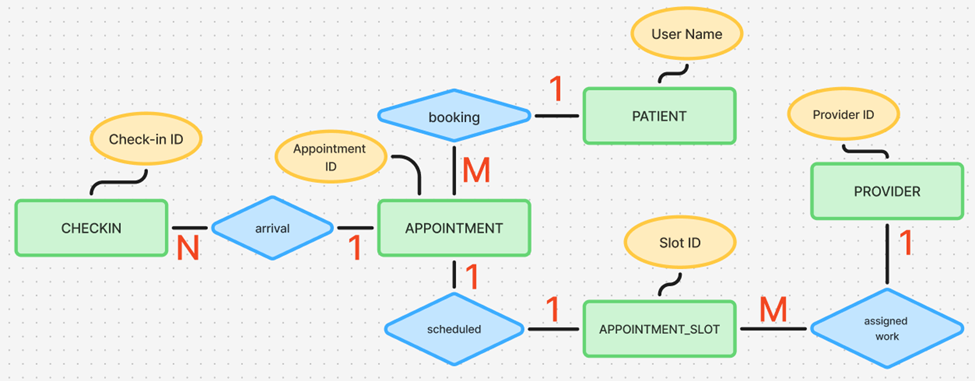

A website made to manage patients, appointments, and the check-in process. Project was worked on at Michigan State University in the MI401 Health Information Technology and Informatics course.

The website is built using Softr, a no-code platform that allows users to create web applications using pre-built components and templates. The website is connected to an Airtable database, which stores all the data related to patients, providers, appointment slots, appointments, and check-ins.

Unsigned in users can view the staff directory without registration. They are required to sign up and log in to access appointment booking. Once logged in, they may select from a large list of times and dates, leading them to a confirmation page. Once confirmed, an appointment will be created in the database. Upon arrival to their appointment, a staff member will confirm check-in, and providers can confirm vitals collection.

To break down the Entity Relationship Diagram, I have five important tables: Patient, Provider, Appointment_Slot, Appointment, and Checkin. The Patient table has a primary key called Full Name (it is the User account name in Softr). The Provider table has a primary key called Provider ID. The Appointment_Slot table has a primary key called Slot ID, and Provider ID as the foreign key. The Appointment table has a primary key called Appointment ID, and the foreign keys Slot ID and Patient ID. The Checkin table has a primary key called Check-in ID, and Appointment ID as the foreign key.
Many care providers are in the Provider table, and those multiple providers can be assigned multiple appointment slots each, however, only one provider binds to a slot. The Appointment_Slot table consists of these many assigned slots, but one slot can only translate into one appointment in the Appointment table. The Patient table is filled with many patients, but only one patient can book one appointment using one slot at a time, however, they can choose to book many appointments later on. The Checkin table is only populated with one linked record when one appointment in the Appointment table is hand confirmed. This confirmation is dependent on the patient arrival first, but they may not arrive.